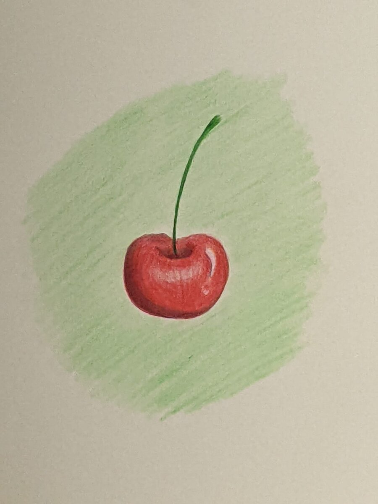
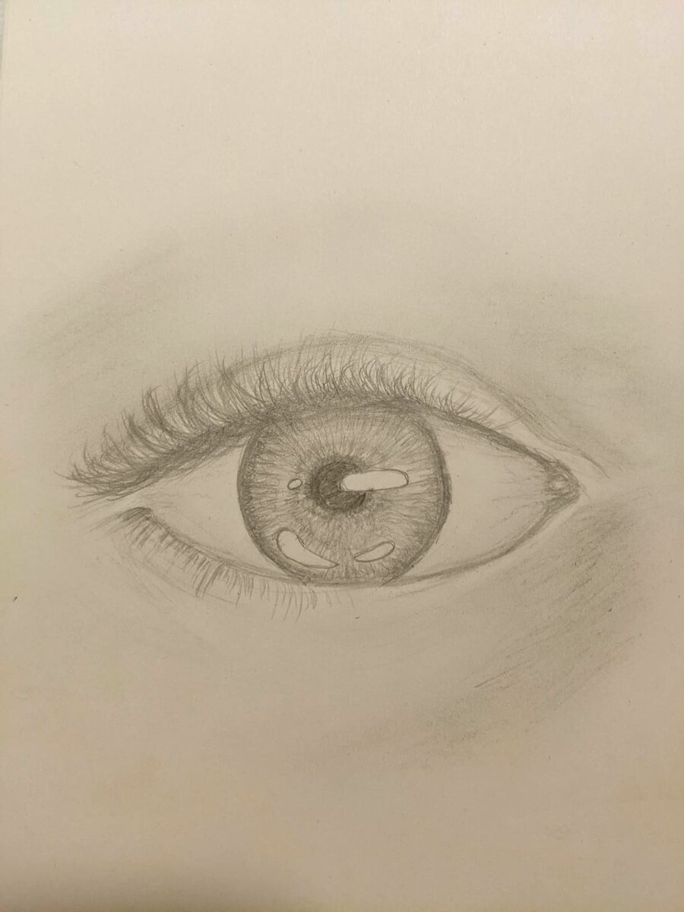
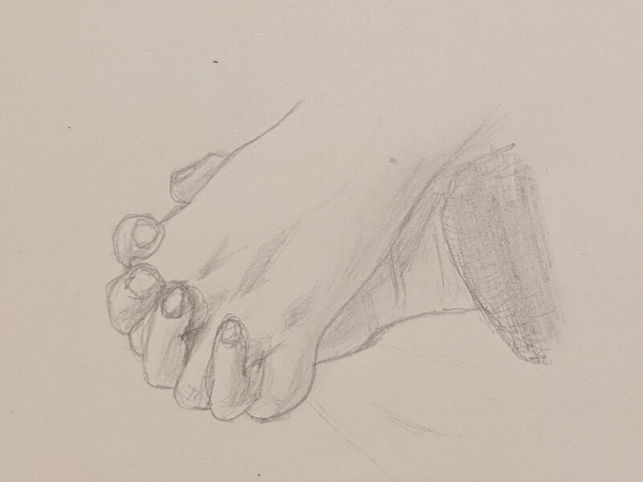
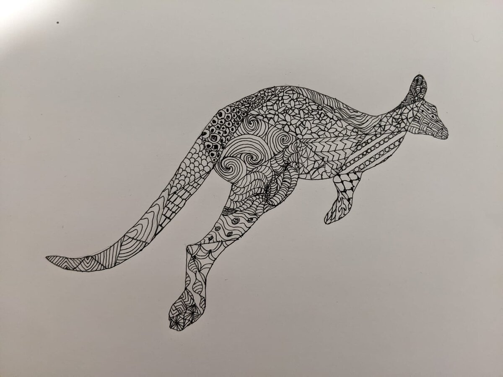
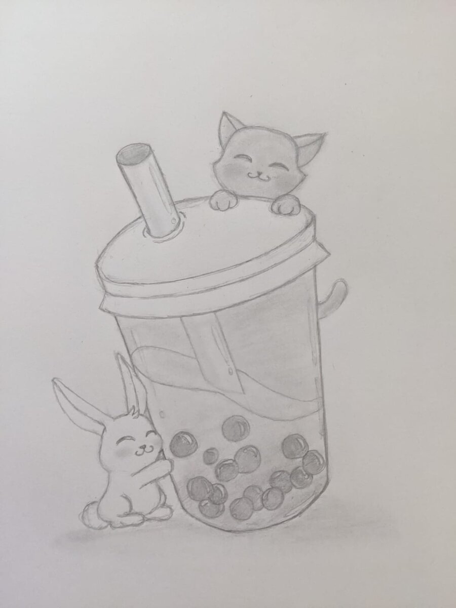
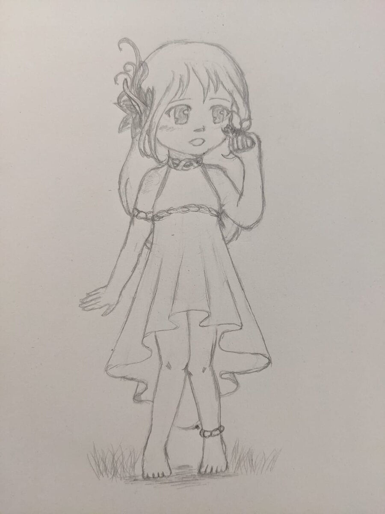
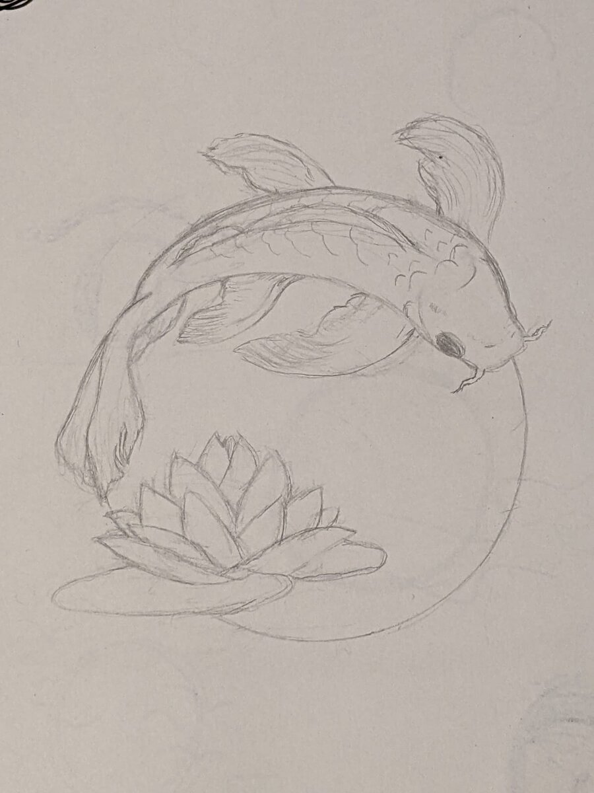
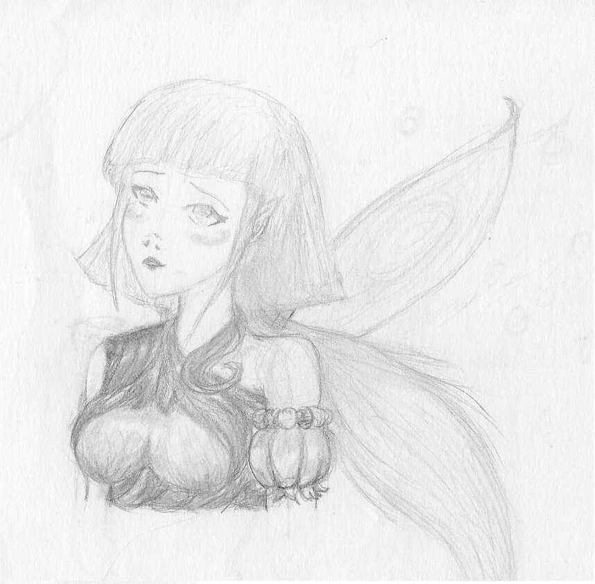

Original Artwork
The purpose was to showcase the complementary colours red and green.
This drawing was made during the 20 to 1 Art Challenge hosted by the Sydney based artist Ros Gervay. The theme was “Complementary”.')">
Cherry(A6)-2023

Resting face(A4)-2023

Colour Splash(A6)-2023
 Drawn with pencils, this was also part the art challenge. The theme was “Zoom”')">Eye(A6)-2023
 Made from a picture of my husband and I.')">
Holding Hands(A6)-2022
 The theme was “Wild”.')">
Wild(A6)-2022
 I drew a little white bunny and a cat holding unto a giant glass of bubble tea.
Those things represent a couple things that makes me happy. It has a secret meaning to it.')">
My Happiness(A6)-2022

Elf(A6)-2022
 The drawing represents a koi fish arching the top of a circle, and a nymphae at the bottom of the circle.
The theme, as you might have guessed, was “Circle”.')">
Koi Fish(A6)-2022
 It is a beautiful fairy looking up, dreamy.')">
Dreamy Fairy(A4)-2017
DTIYS/Fanart